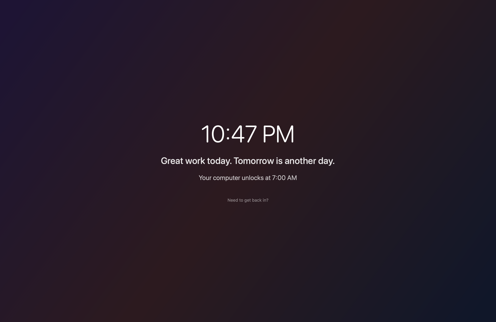

A hard stop
for your Mac.
Set a schedule. When the clock runs out, your machine locks you out — warnings, then an overlay, then an optional shutdown. No willpower required.

How it works
Set a weekly schedule
Per-day lock and unlock times, day-off support, three presets to start. Weaker changes wait out a cooldown so late-night you can't rewrite early-morning you's rules.
Warnings arrive
Notifications at T-30, T-15, T-5, T-2, T-1. Click-through dim overlays for the early stages, an always-on-top timer for the last five minutes.
Curfew fires
Full-screen overlay covers every display and every Space. ⌘⇥, ⌘Q, and ⌘⌥Esc are intercepted. Optional auto-shutdown closes your apps and powers the machine down.
Need to get back in? A typed justification, a five-minute cooldown, and hold-to-confirm — overrides cost something deliberate. Weekly budgets for extensions and overrides are visible in the menu bar; the This Week view shows what actually happened.
Claude can negotiate with your focus rules.
curfew-mcp is a stdio MCP server bundled with the app.
Add it to Claude Desktop and your assistant can check how much time
is left or request an extension — writes require your explicit
approval through an in-app consent sheet.
{
"mcpServers": {
"curfew": {
"command": "/Applications/Curfew.app/Contents/Resources/curfew-mcp"
}
}
}$ curfew-ctl status
phase: warning
remaining: 14 min
locks at: 6:00 PM
warning: T-15
A matching CLI (curfew-ctl) ships in the app bundle for
shell scripts and dotfile hooks — same shared storage, no IPC
dance, works whether the app is running or not.
Curfew Pro
For people working across multiple Macs. Pro adds iCloud-synced schedules — the same curfew on every machine you sign into — and calendar-aware warnings that notice when a meeting will collide with your gate.
$20 one-time. Verified offline, no subscription, perpetual license.
Buy Curfew Pro — $20Secure checkout is handled by Stripe. Your license key appears on the confirmation page right after payment and is also emailed to you. Paste it into Curfew → Settings → License to unlock Pro.
Download
Requires macOS 26 or later. Free, open source (MIT).
Download latest DMGSigned & notarized Developer ID build · source on GitHub · no telemetry, no analytics, no network calls except iCloud sync (Pro, opt-in).
Or build from source:
git clone github.com/TheHypertextStudio/curfew && open Curfew.xcodeproj